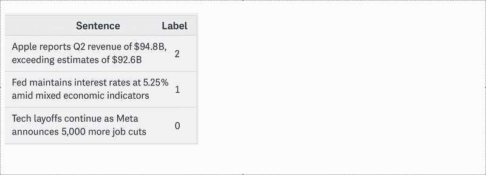

Financial Sentiment Analysis is the process of using natural language processing (NLP) and machine learning techniques to interpret and quantify the emotions or opinions expressed in financial news, social media, earnings reports, and other text-based data.[1, 2] It focuses on identifying whether the sentiment is positive, negative, or neutral toward a particular stock, market trend, or economic event.[3] This analysis helps investors and financial institutions understand market psychology and anticipate price movements more effectively.
The importance of financial sentiment analysis lies in its ability to provide real-time insights that traditional financial metrics may overlook. Markets are often driven not only by fundamentals but also by investor emotion and crowd behavior. By tracking the mood of the market through textual data, sentiment analysis offers an edge in decision-making, especially in high-frequency trading, portfolio management, and risk assessment.
Related Work
| Model | Based on | Trained on | Best for |
|---|---|---|---|
| FinBERT | BERT | Financial news, reports, SEC filings | Sentiment analysis, document classification |
| FinGPT | GPT | Financial news, earnings reports | Text generation, report writing |
| BloombergGPT | Large LLM | Bloomberg Terminal data | News summarization, financial Q&A |
| BERTTweet | BERT | Twitter finance-related posts | Social media sentiment analysis |
| FinLlama | LLaMA | Financial news | Sentiment analysis for algorithmic trading |
Natural Language Processing techniques have become widely popular in the finance industry. The advent of language models has enhanced our ability to automate various tasks, such as sentiment analysis, risk assessment[4], algorithmic trading[5], and financial report summarization[6]. With the development of powerful LLMs, the industry has turned to LLMs fine-tuned on relevant financial data to accomplish these tasks.[7].
FinBERT[8] combines the BERT[9] language representation model, with LSTM and ULMfit classifiers to perform sentiment analysis and document classification tasks. FinGPT[10], based on the GPT architecture, is designed for more generative tasks. Trained on financial news and earnings reports, it excels at text generation and report writing, making it suitable for automated content creation in finance. BloombergGPT, a large-scale model trained on proprietary Bloomberg Terminal data, financial news, and filings, is optimized for tasks like news summarization and financial question-answering, benefiting from its access to rich and structured financial datasets.
In the social media domain, BERTTweet[11] adapts the BERT model to Twitter data, with a focus on finance-related posts. It is particularly effective for analyzing sentiment in informal, user-generated content where language can be noisy and context-dependent. FinLLaMA[12] is based on the LLaMA architecture and trained specifically on financial news. It is designed with algorithmic trading in mind, making it well-suited for real-time sentiment analysis and decision support in high-frequency trading environments.
These models highlight the growing trend of domain adaptation in language modeling, where fine-tuning general architectures on financial data significantly improves performance on specialized financial tasks.
Data
The training phase leverages a combination of the Twitter Financial News [13] and FiQA datasets [14], totaling 10,501 labeled samples. These datasets provide a balanced mix of informal, real-time social media content and more structured financial commentary. This diversity allows the model to learn how sentiment is expressed across different tones and contexts. Standard preprocessing steps such as tokenization, lowercasing, and the removal of non-informative elements (like URLs or mentions) are applied to clean the data. The model is then fine-tuned on this data, often using transformer-based architectures like BERT or FinBERT, which are well-suited for capturing subtle linguistic cues in financial texts.
To ensure the model generalizes beyond the training data, validation is performed using 2,388 additional samples from the Twitter Financial News dataset. This set helps monitor overfitting and tune hyperparameters by testing the model on unseen social media content. For final evaluation, the model is tested on the Financial PhraseBank (FPB)[15], a professionally annotated dataset with 4,840 high-quality financial sentences. This testing step provides a reliable benchmark of how well the model performs on formal, domain-specific financial language, making it a critical component of the model’s assessment pipeline.
To minimize the high cost of expert annotation, existing financial sentiment classification datasets are reformatted into an instruction-following format. Instead of labeling new data from scratch, each sample is combined with one of 15 manually written instructions that describe the sentiment analysis task. These are structured as: “Human: [instruction] + [input], Assistant: [output]”. This approach transforms traditional input-label pairs into a format suitable for training instruction-tuned models, allowing for efficient use of existing resources while maintaining task clarity and diversity

Method & Experiments
The fine-tuning process of the LLaMA 7B model [12] for financial sentiment analysis was carefully crafted to balance efficiency and performance. It began with the initialization of the pre-trained LLaMA 7B model and tokenizer, which were leveraged to process financial text data. The model's output layer was then adjusted to meet the specific requirements of the sentiment classification task, enabling it to output sentiment labels such as positive, negative, or neutral.
Several key hyperparameters were optimized throughout the process. The learning rate was tuned to achieve a balance between rapid convergence and model stability, while the batch size was set based on GPU memory capacity to maximize utilization. The number of epochs was empirically chosen to ensure that the model had enough exposure to the data without overfitting. For hyperparameter optimization, Bayesian Optimization was used, providing an efficient way to fine-tune the model's settings. The AdamW optimizer was selected due to its ability to adapt learning rates and its built-in weight decay, helping to improve generalization.
To enhance training efficiency, a parameter-efficient fine-tuning (PEFT) strategy based on LoRA (Low-Rank Adaptation)[13] was applied. LoRA allows for fine-tuning only a subset of the model's parameters, significantly reducing computational requirements while maintaining strong performance. Regular checkpointing was implemented to save the model's state at intervals, allowing for recovery and evaluation during training. Monitoring of training metrics, such as accuracy and loss, was done in real-time to track the model's progress and ensure stable convergence.
A custom training loop was set up with a carefully defined loss function and learning rate scheduling to ensure optimal convergence. The model's performance was closely monitored on a separate validation set to track accuracy and loss, ensuring the model generalized well and didn't overfit. This comprehensive fine-tuning approach led to the creation of a robust and efficient LLaMA 7B model for financial sentiment analysis, capable of performing well across a wide variety of financial texts.
Since the instruction-fine-tuned LLaMA 7B model is an autoregressive generative model, it has the flexibility to produce free-form text—even when trained with an instruction-following format aimed at guiding it toward specific sentiment labels. As a result, the model's outputs may not always be limited to the exact labels “positive,” “negative,” or “neutral,” which poses a challenge during evaluation. To address this, a simple yet effective post-processing step is applied to interpret the model's responses. The output is sequentially scanned for the presence of the words “negative,” “neutral,” or “positive.” As soon as one of these terms is detected, it is mapped to the corresponding sentiment label. If none of the target words appear in the response, the sentiment is defaulted to “neutral.” This rule-based mapping ensures consistent and reliable evaluation of the model’s performance despite its generative nature.
Results
The evaluation results clearly demonstrate that our fine-tuned LLaMA-7B model outperforms all compared models across both the Financial PhraseBank (FPB) and Twitter Financial News datasets. On the FPB dataset, our model achieves the highest accuracy at 0.712, indicating superior ability to correctly classify financial sentiment. While its F1 Score on FPB (0.603) is slightly below that of ChatGPT 4.0, the difference is minimal, and the overall performance remains strong, reflecting a good balance between precision and recall.
| Model | Financial PhraseBank (FPB) | Twitter Financial News (Val) | ||
|---|---|---|---|---|
| Accuracy | F1 Score | Accuracy | F1 Score | |
| ChatGLM2-6B | 0.458 | 0.409 | 0.512 | 0.498 |
| LLaMA-7B | 0.620 | 0.436 | 0.558 | 0.326 |
| ChatGPT 4.0 | 0.704 | 0.658 | 0.805 | 0.699 |
| ALPACCA-SENSE | 0.712 | 0.603 | 0.825 | 0.717 |
These results confirm that our model provides state-of-the-art performance for financial sentiment analysis, particularly excelling in scenarios where data is noisy or sentiment is more subtle, such as in social media content.
Conclusion
The ALPACCA-SENSE framework demonstrates the effectiveness of fine-tuning large language models for domain-specific sentiment analysis in finance. By leveraging the LLaMA 7B model with parameter-efficient techniques like LoRA, our approach achieves state-of-the-art performance on both formal (Financial PhraseBank) and informal (Twitter Financial News) datasets. The model's superior accuracy and robustness—particularly in handling noisy, real-world text—highlight the value of instruction tuning and efficient training strategies. These results underscore the growing potential of LLMs in supporting financial decision-making, sentiment tracking, and real-time market analysis. Future work may explore multi-modal inputs, real-time deployment, and integration with trading systems to further enhance the model's utility in financial environments.
Discussion
Incorporating Retrieval-Augmented Generation (RAG) into ALPACCA-SENSE offers a powerful avenue to enhance contextual understanding, especially when dealing with sparse or ambiguous financial texts. By retrieving relevant external documents—such as recent news articles, earnings reports, or SEC filings—RAG enables the model to ground its sentiment predictions in richer, real-time context. This is particularly valuable in finance, where up-to-date information often alters sentiment and nuance significantly. Integrating RAG can help mitigate hallucinations and improve factual consistency, especially in edge cases where model confidence is low.
To further boost ALPACCA-SENSE’s robustness and trustworthiness, I plan to implement feedback loops and human-in-the-loop (HITL) mechanisms. These will allow users to provide real-time corrections or confirmations, helping the model learn from its mistakes and adjust to new sentiment trends. Incorporating this into the pipeline—especially in the form of active learning—ensures that the model doesn’t just perform well on benchmarks but continues to evolve based on real-world usage and expert oversight. Over time, this interactive refinement will improve both performance and user confidence.
I’m excited to explore and integrate these enhancements into ALPACCA-SENSE. Stay tuned for updates as the model evolves into a more intelligent, context-aware, and user-guided financial sentiment analysis system.
References
- Bo Pang, Lillian Lee, and Shivakumar Vaithyanathan. Thumbs up? sentiment classification using machine learning techniques, 2002..
- Tim Loughran. When is a liability not a liability? textual analysis, dictionaries, and 10-ks. The Journal of Finance, 02 2011.
- Andrew Todd, James Bowden, and Yashar Moshfeghi. Text-based sentiment analysis in finance: synthesising the existing literature and exploring future directions. 31(1), March 2024.
- Akib Mashrur, Wei Luo, Nayyar A. Zaidi, and Antonio Robles-Kelly. Machine learning for financial risk management: A survey. IEEE Access
- Zihao Zhang, Stefan Zohren, and Stephen Roberts. Deep learning for portfolio optimization. The Journal of Financial Data Science, 2(4):8–20, August 2020.
- Natalia Vanetik, Marina Litvak, and Sophie Krimberg. Summarization of financial reports with tiber. Machine Learning with Applications, 9:100324, 05 2022.
- Yinheng Li, Shaofei Wang, Han Ding, and Hang Chen. Large language models in finance: A survey, 2024.
- Dogu Araci. Finbert: Financial sentiment analysis with pre-trained language models, 2019.
- Jacob Devlin, Ming-Wei Chang, Kenton Lee, and Kristina Toutanova. Bert: Pre-training of deep bidirectional transformers for language understanding, 2019
- Hongyang Yang, Xiao-Yang Liu, and Christina Dan Wang. Fingpt: Open-source financial large language models, 2023.
- Dat Quoc Nguyen, Thanh Vu, and Anh Tuan Nguyen. Bertweet: A pre-trained language model for english tweets, 2020.
- Giorgos Iacovides, FinLlama: LLM-Based Financial Sentiment Analysis for Algorithmic Trading , ICAIF '24'
- Neural Magic, “Twitter financial news sentiment,” http://precog.iiitd. edu.in/people/anupama, 2022
- Macedo Maia, Siegfried Handschuh, Andre Freitas, Brian Davis, Ross McDermott, Manel Zarrouk, and Alexandra. Balahur, “Www ’18: Companion proceedings of the the web conference 2018,” in International World Wide Web Conferences Steering Committee, Republic and Canton of Geneva, CHE, 2018.
- Pekka Malo, Ankur Sinha, Pekka Korhonen, Jyrki Wallenius, and Pyry Takala, “Good debt or bad debt: Detecting semantic orientations in economic texts,” Journal of the Association for Information Science and Technology, vol. 65, no. 4, pp. 782–796, 2014.
- Hugo Touvron, Thibaut Lavril, Gautier Izacard, Xavier Martinet, Marie-Anne Lachaux, Timothee Lacroix, Baptiste ´ Roziere, Naman Goyal, Eric Hambro, Faisal Azhar, Aurelien Rodriguez, Armand Joulin, Edouard Grave, and Guillaume ` Lample. Llama: Open and efficient foundation language models, 2023.
- Edward J. Hu, Yelong Shen, Phillip Wallis, Zeyuan Allen-Zhu, Yuanzhi Li, Shean Wang, Lu Wang, and Weizhu Chen. Lora: Low-rank adaptation of large language models, 2021.